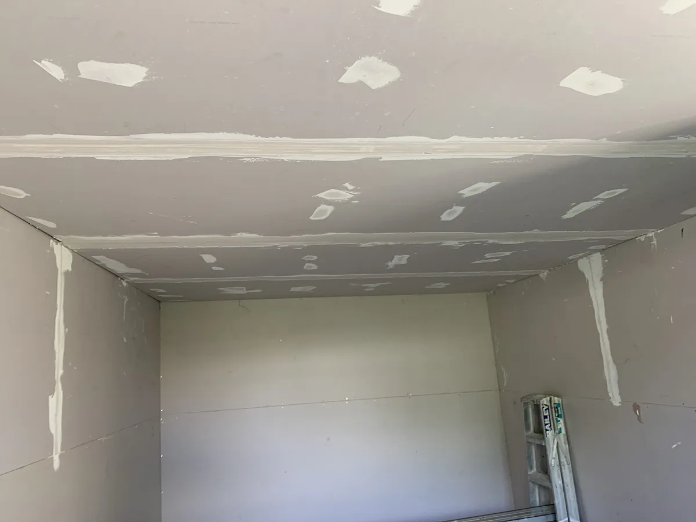
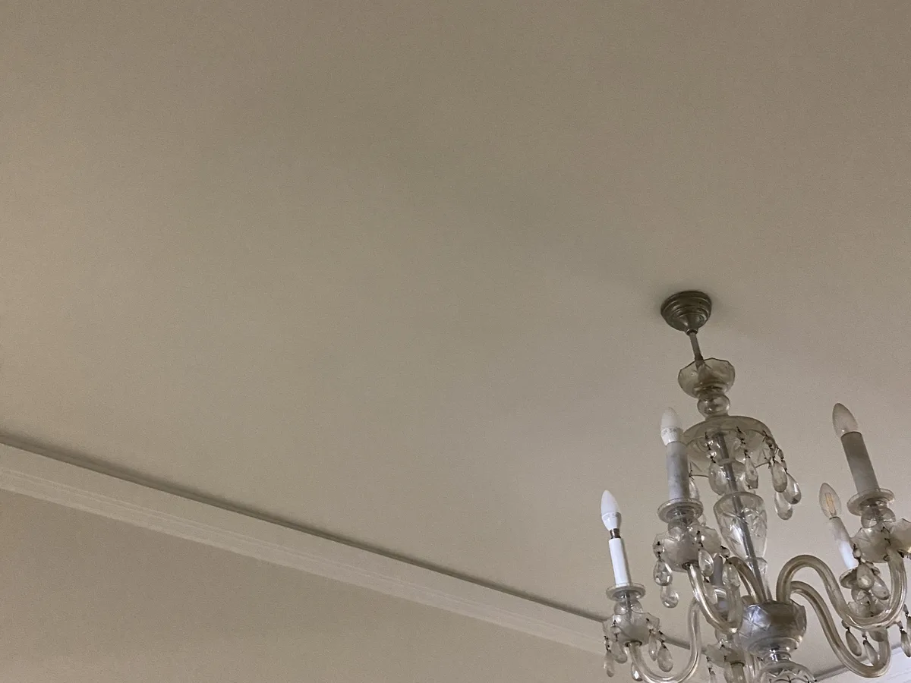
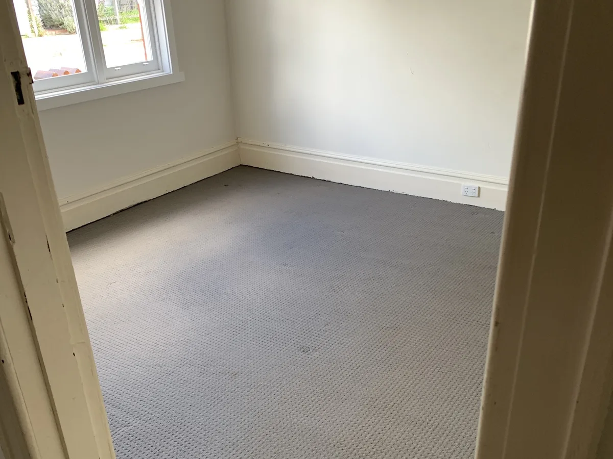

Hairline cracks, ceiling stains, dented walls, dropped cornice — JT's in-house team patches, re-sheets and finishes plaster to a paint-ready standard, so the fix actually holds instead of reappearing in six months.

A tube of filler smoothed over a crack looks fine for a few weeks — then it opens back up, because nobody dealt with what caused it. Movement in the frame, a slow roof leak, old cornice adhesive giving way. JT's plasterers check the cause before they touch the surface, so the repair is still flat and crack-free a year later, not just on handover day.

Hairline settling cracks through to wider movement cracks — cut back, re-sheeted or set, sanded flush and blended into the surrounding surface.
Doorknob holes, dents, old wall-mount fixings — patched with matching board thickness so the wall reads flat under any light.
Ceiling stains and soft, sagging plaster from a roof or plumbing leak — cut out, replaced and finished once the source is fixed.
Dropped, cracked or missing cornice re-fixed or replaced to match existing profiles, including older period styles.
Nail pops and cracking along plasterboard joints re-set properly so the line doesn't reopen after the next repaint.
Every repair sanded, primed and blended level with the surrounding wall — ready for our painters or yours to finish.

Plaster and paint are two different trades on most jobs, which usually means two different bookings. JT's plasterers and painters are the same in-house team, so your crack repair rolls straight into a colour-matched touch-up or full repaint without a second quote or a second wait.
See painting & plastering →Send a photo and a few details and get a real price back, often on the spot.
We confirm whether it's cosmetic movement or something to address before we patch.
Cut back, re-sheeted or set, and sanded flush with the surrounding surface.
Primed, blended and painted to match, photographed on completion.
Most wall and ceiling cracks are cosmetic, caused by normal seasonal movement. Wider stepped cracks, or cracks that keep reopening in the same spot, are worth a proper look before patching — we'll tell you straight if that's the case.
A well-matched repair blends into the wall under normal light. We match board thickness, set level with the surrounding surface, and colour-match the paint so the patch doesn't read as a patch.
Yes — if a ceiling's had a leak or a wall needs a full repaint to blend the repair evenly, our painters can take on the rest of the room in the same job.
Tell us what's cracked, holed or stained and get a real price back fast.